Overview
Give a high-level overview of what you implemented in this project. Think about what you've built as a whole. Share your thoughts on what interesting things you've learned from completing the project.
Section I: Rasterization
Part 1: Rasterizing single-color triangles
A triangle is rasterized by using the fact that a triangle defines 3 lines. The normals of these lines face the inside of the triangle. Therefore, if a point is on the same side of all 3 lines as the normal is, it must be inside the triangle.
There is, however, a caveat. Because a triangle is defined via 3 points internally, there are two possible line configurations for any triangle: one where the points and corresponding lines are clockwise, and one where they are anticlockwise. Taking this case into account requires an extra calculation
Once you have a function to tell if a point is inside a triangle or not, all that remains is to iterate over points possibly in the triangle and rasterize every point within.
My algorithm is no worse than one that checks each sample within the bounding box of the triangle because it is an algorithm that does that.
| 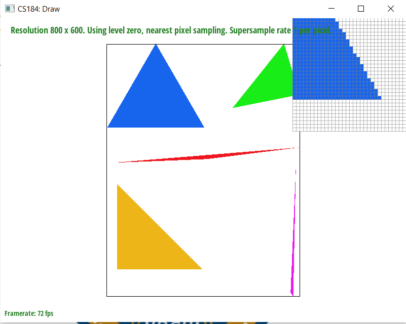 | 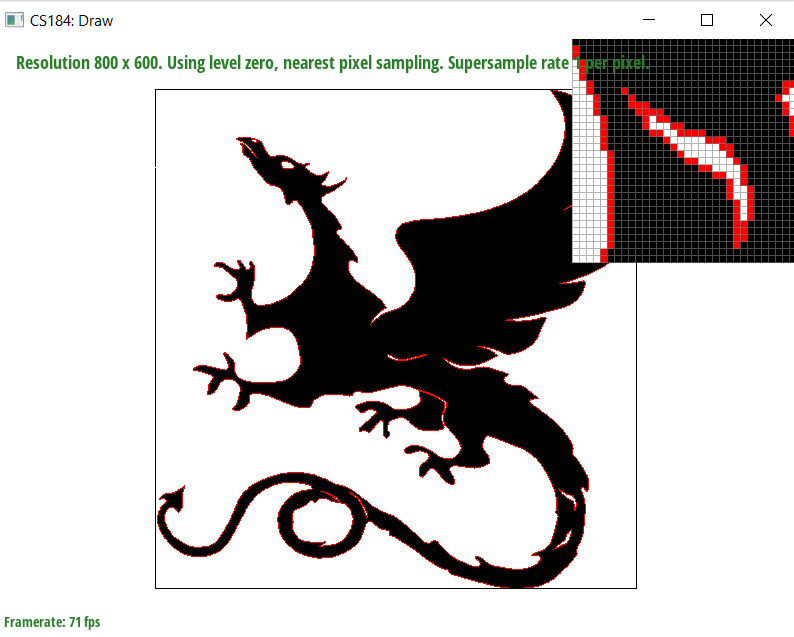 |
To help speed up the rasterization, I also did the following:
- Rewrote the nested loop to improve cache hit rate by looping across y on the outside
- Expanded and rewrote the formula as a sum of a precalculated term multiplied by an unknown, which reduces the number of calculations within each loop
|
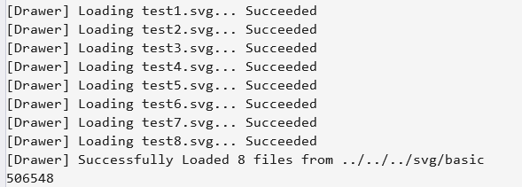
|
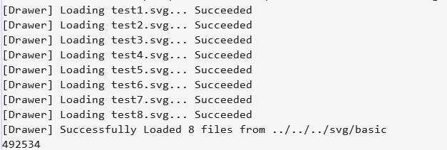
|
Part 2: Antialiasing triangles
Supersampling is useful because it allows you to use details of the image at a higher resolution when deciding how to render at the proper resolution. This can be used to give jaggies context and make them look smooth, as well as resolving other conflicts that may arise.
When implementing supersampling, the key idea I used was first rendering everything into a larger buffer, then converting to the proper output resolution in resolve_to_framebuffer(). When rasterizing triangles, I upscale every coordinate by the sample scaling, which is derived from the sample rate. The resolution conflict is then resolved before being stored in the framebuffer by averaging the values around a pixel and "smushing" them together to downscale the image. Because point and line antialiasing does not need to be supported, these functions instead fill the values around the pixel with exact copies, so during the downscaling step they will resolve to an unaliased pixel.

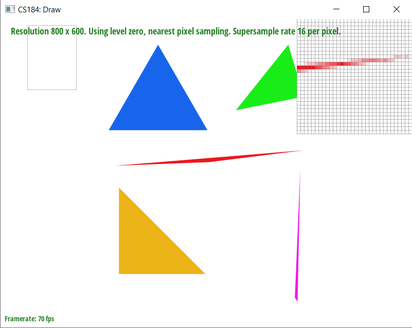
Without antialiasing, jaggies are immediately visible and obvious. Jaggies are a result of the output resolution not being fine-grained enough to produce a perfect recreation of the desired shape. However, antialiasing attempts to alleviate this by intentionally reducing the sharpness around antialiased areas. By doing this, the pixels around jaggies will have additional contextual hints to the eye and will not be perceived as undesireably.
Part 3: Transforms
I used translates, followed by rotates, and finally scales in order to create an impression of cubeman cheering you on.
Section II: Sampling
Part 4: Barycentric coordinates
Barycentric coordinates represent the ratio of the distance from a vertex to the point. Because of this, each of the corners of the triangle have coordinates (1, 0, 0), (0, 1, 0), and (0, 0, 1). Coordinates between one end to another scale linearly, so the center of the triangle will be (1/3, 1/3, 1/3). A representation can be seen below. of the distance between the point and the triangle's vertices.Part 5: "Pixel sampling" for texture mapping
Pixel sampling allows you to sample for what color should be at the location of a pixel. Because textures usually do not map perfectly onto a screen, you need a way to find out where a pixel on the screen lands on a texture. Different pixel sampling methods allow you to do that as well as enhance image quality by applying filtering at the same time.
Nearest neighbour sampling works by selecting the closest color at the area where a pixel maps to on a texture. This is the simplest method of pixel sampling.
Bilinear sampling executes two linear interpolations on the color returned: one on the x axis and one on the y axis.
|
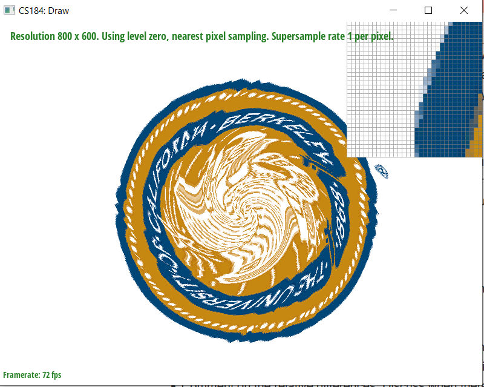
|
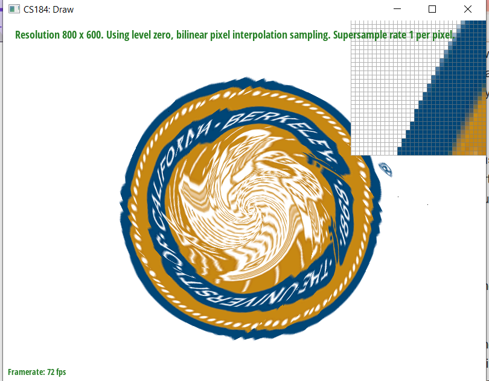
|
|
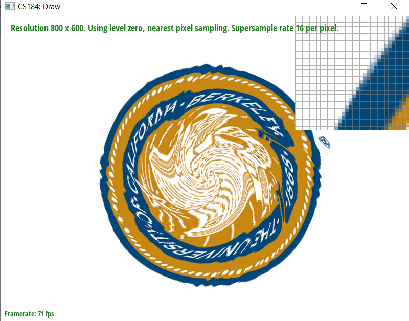
|
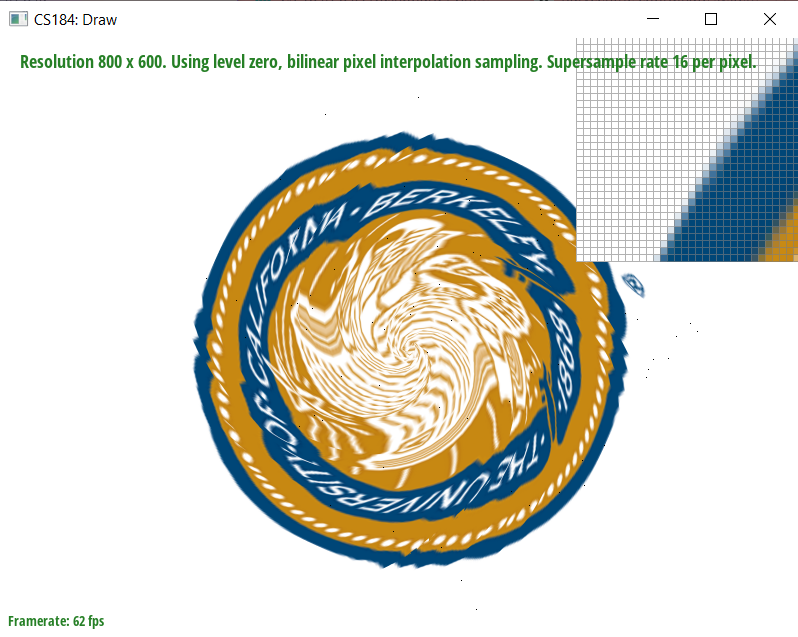
|
Because pixel sampling and supersampling both have antialiasing effects, the benefit of having bilinear interpolation over nearest neighbour sampling is clearest when supersampling is disabled, as illustrated in the images above.
Part 6: "Level sampling" with mipmaps for texture mapping
Level sampling goes a layer above pixel sampling. It takes the pixel that pixel sampling returns, then combines it in various ways with other pixels requested from the same sampling method. It does this via mipmaps, which are precomputed lower resolution versions of the texture. These mipmaps are used to provide additional context to the pixel returned from pixel sampling. This additional context helps reduce aliasing of far objects without introducing blurring for close objects.
The simplest way to do this is via nearest neighbour mipmapping, which takes the nearest mipmap and takes the nearest neighbour from it. You can also interpolate between the two closest mipmaps.
Supersampling increases the runtime execution exponentially, so it is very expensive and becomes even more expensive the higher the level of supersampling. Nearest pixel sampling is relatively cheap and the simplest form of pixel sampling. Bilinear pixel sampling takes two interpolations, and is mathematically intensive as a result. These two interpolations retrieve four pixels total, so it is more expensive than nearest neighbour. However, its antialiasing is also better than nearest neighbour. Level sampling takes extra up-front computation to produce mipmaps and also stores extra data. It also takes extra calculations to compute the correct mipmap level. Nearest neighbour mipmapping is the simplest form of mipmapping, and provides some of the benefits while avoiding being highly expensive. Linear interpolated mipmapping takes an extra interpolation between two mipmaps, and is more expensive as a result.
|
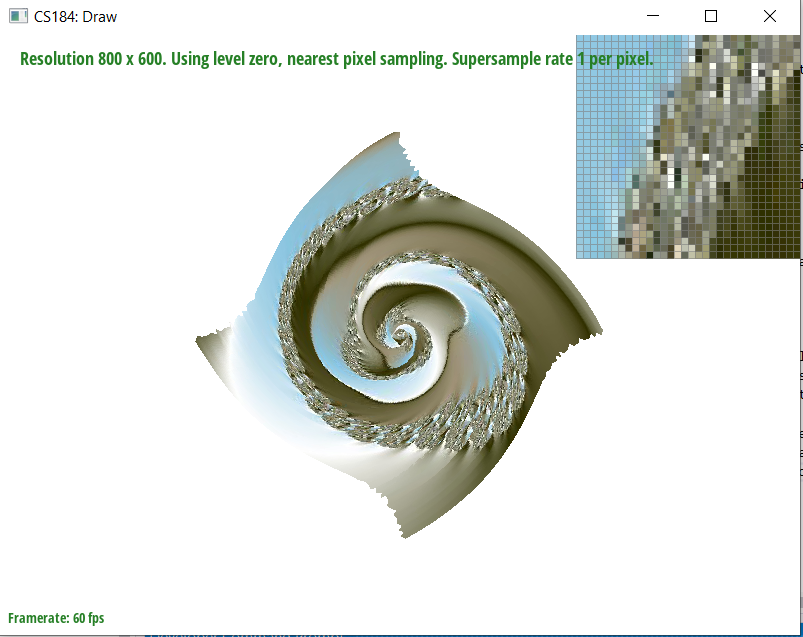
|
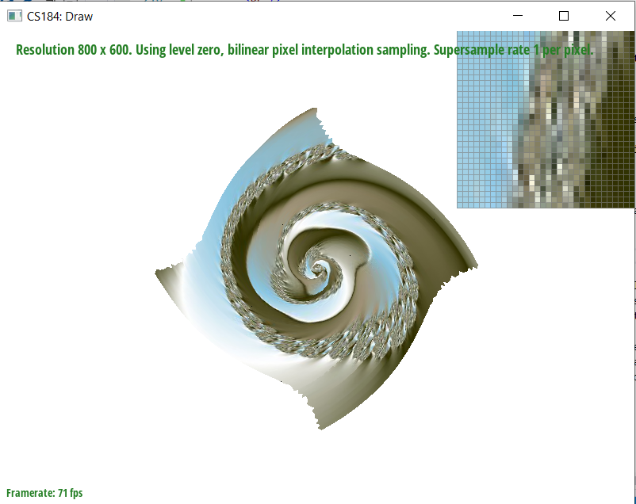
|
|
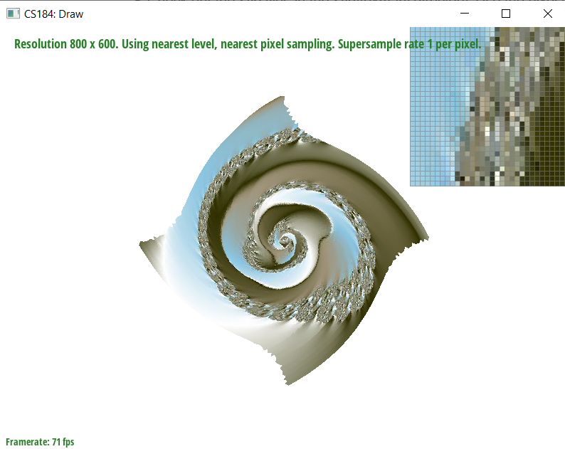
|
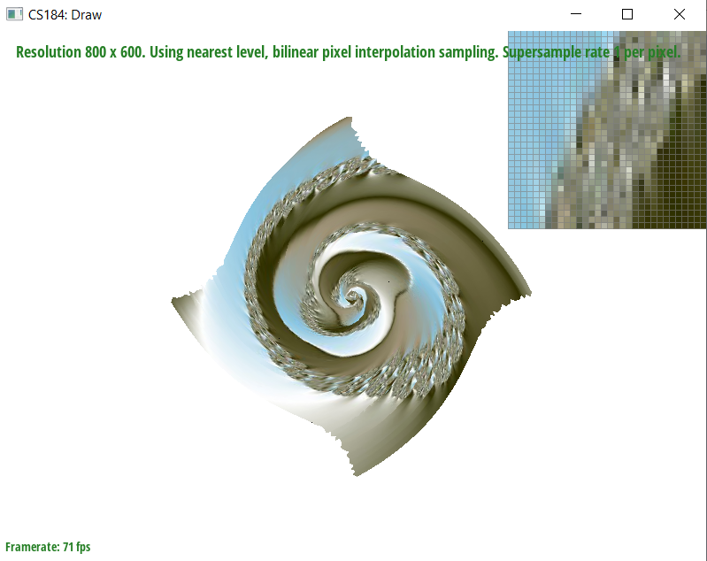
|
The difference between L_ZERO and L_LINEAR is subtle, but is most noticable on the interior of the spiral where certain areas are more antialiased with L_LINEAR. P_LINEAR's effects, however, are more dramatic and can be seen immediately. The noise along the edges is drastically reduced and there are less color outliers.
Website URL: https://cal-cs184-student.github.io/sp22-project-webpages-GalliumCat/